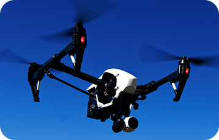
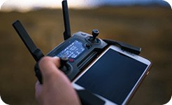
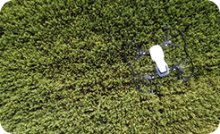

価格・スペック
ギャラリー
特長
-

自動操縦が可能で、短時間で大量の農作物を監視、収穫、播種、散布などの作業ができます。
-

高精度のカメラやセンサーを搭載しており、正確な土壌・作物の情報を収集でき、水や肥料などの資源を適切に配分できます。
-
必要な場所にだけ肥料や農薬を散布することができます。これにより、農薬や肥料の過剰使用が抑えられ、環境負荷やコスト削減に繋がります。
メーカー希望小売価格
¥550,000（税込）
スペック
機体
- ドローン名
- アグリ・ファルコン
- 製品番号
- AGF-100
- 飛行時間
- 60 分
- 最大積載量
- 5 kg
- 操作距離
- 3 km
- 機体重量
- 8 kg
- 機体寸法
- 150 x 150 x 40 cm
- 機能・特徴
- 自動操縦、植物生育モニタリング、農薬散布